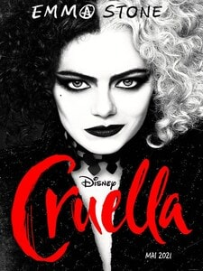
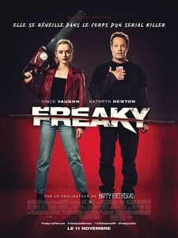
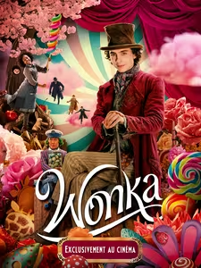
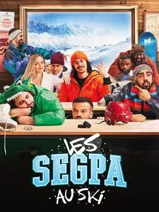
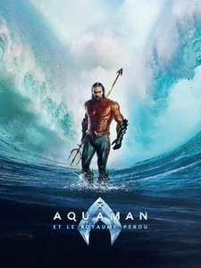

Tom & Jerry

Les nouvelles aventures de Tom & Jerry dans un long métrage mêlant CGI et prises de vues réelles. Tom, le chat et Jerry, la souris n'ont plus de domicile. Ils emménagent dans un hôtel chic de New York où Kayla a trouvé un emploi. Mais pour qu'elle puisse le garder, il faut impérativement qu'elle chasse Jerry avant la réception d'un mariage...
Cruella
Londres, années 70, en plein mouvement punk rock. Escroc pleine de talent, Estella est résolue à se faire un nom dans le milieu de la mode. Elle se lie d'amitié avec deux jeunes vauriens qui apprécient ses compétences d'arnaqueuse et mène avec eux une existence criminelle dans les rues de Londres. Un jour, ses créations se font remarquer par la baronne von Hellman, une grande figure de la mode, terriblement chic et horriblement snob. Mais leur relation va déclencher une série de révélations qui amèneront Estella à se laisser envahir par sa part sombre, au point de donner naissance à l'impitoyable Cruella, une brillante jeune femme assoiffée de mode et de vengeance
Freaky
Millie Kessler, une adolescente de 17 ans, occupée à faire bonne figure dans son très élitiste lycée, Blissfield High, devient la nouvelle cible du Boucher, un tueur en série tristement notoire. Son année de Terminale va alors devenir le cadet de ses soucis. Lorsque, sous l'effet du poignard antique du Boucher ils se réveillent dans le corps de l'autre, Millie n'a alors que 24 heures pour retrouver son corps afin de ne pas rester coincée pour le restant de ses jours dans la peau d'un tueur en série d'une cinquantaine d'années. Tâche délicate étant donné qu'elle ressemble désormais à une armoire à glace psychopathe, recherché par la police et cible d'une chasse à l'homme locale alors que le Boucher, lui, dans la peau de la jeune fille, est bien décidé à célébrer un retour en fanfare dans un bain de sang.
Wonka
Découvrez la jeunesse de Willy Wonka, l’extraordinaire inventeur, magicien et chocolatier de l’univers féérique de Charlie et la chocolaterie de Roald Dahl, dans le film WONKA. Timothée Chalamet incarne ce jeune homme débordant d’idées et déterminé à changer le monde… avec gourmandise ! Cette œuvre haute en couleur, mêlant émotion et humour, prouve que, dans la vie, les rêves peuvent devenir réalité – surtout si on a la chance de rencontrer Willy Wonka.
Les Segpa au ski
Les Segpa se retrouvent pour une nouvelle année scolaire riche en aventures, propulsés directement en Terminale. Deux challenges majeurs les attendent : la réussite de leur bac et leur participation soudaine aux Olympiades d’hiver inter-lycées.
Aquaman et le Royaume perdu
James Wan et Jason Momoa, reviennent pour une expérience cinématographique spectaculaire dans AQUAMAN ET LE ROYAUME PERDU. Black Manta, toujours hanté par le désir de venger son père, est maintenant plus puissant que jamais avec le légendaire Trident Noir entre ses mains. Pour l’anéantir, Aquaman doit s’associer à son frère Orm ancien roi d’Atlantide et actuellement emprisonné. Ensemble, ils devront surmonter leurs différences pour protéger leur royaume et sauver le monde d’une destruction irréversible.